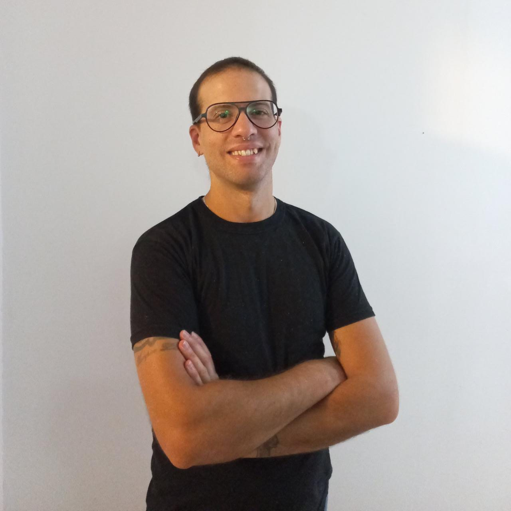

MARCOS MIRAGLIA
Técnico Informático | Desarrollador de Software
CONTACTO
Dirección: La Pampa 834
RESUMEN PROFESIONAL
Soy un técnico informático con ocho años de experiencia en el Museo de Arte Contemporáneo MAR de Buenos Aires. Actualmente, me desempeño como programador junior y estoy buscando nuevos desafíos en el campo de la programación. Me apasiona aprender a través de la práctica y siempre estoy dispuesto a enfrentar nuevos desafíos en el mundo de la tecnología.
EXPERIENCIA LABORAL
Desarrollador de Software
Museo de Arte Contemporáneo MAR, Buenos Aires | Septiembre 2015 - Presente
- Trabajo como programador Jr. en el desarrollo de sistemas para la gestión de la información (Intranet).
- Mantenimiento de redes y servidores.
- Mantenimiento de equipos informáticos y otras tecnologías.
Administrador de Soluciones Informáticas
Salamonerico S.A., Buenos Aires | Mayo 2016 - Septiembre 2020
- Responsable del mantenimiento y administración de soluciones informáticas.
- Brindé soporte técnico y resolví problemas relacionados con hardware y software.
- Participé en el armado de sistemas para la gestión de la información.
Trabajo en Departamento de I.T.
A.D.U.M., Buenos Aires | Marzo 2012 - Octubre 2015
- Colaboré en el desarrollo de aplicaciones jr. bajo la supervisión de Pablo Nicolás Rico.
EDUCACIÓN
Escuela de Enseñanza Técnica N°5
Técnico Informático Profesional
Cursos:
- UCIP: Programación Java Nivel 1
- UCIP: Programación Orientada a Objetos
- Maquetación Web
OTROS
- Educador Scout
- Talleres de Coaching "Liderazgo Grandioso" por Tomas Morel
- Comunicación Digital